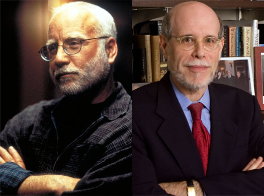

Highlights
Special Lincoln performance in Jacksonville will feature Richard Dreyfuss and Harold Holzer
JACKSONVILLE, Ill. — Academy Award winning actor Richard Dreyfuss and critically acclaimed Lincoln scholar Harold Holzer will give a rare performance of “Lincoln Seen and Heard” Friday, March 27, on the campus of Illinois College in Jacksonville.

The dramatic reading, accompanied by projected Lincoln images, has been performed for only a few select audiences during the Bicentennial year including the White House, Ford’s Theatre, the Library of Congress, and at the George H.W. Bush and William Clinton presidential libraries. Co-hosted by Illinois College and the Illinois State Historical Society, the event will come as part of the annual ISHS annual Symposium, this year entitled “Abraham Lincoln in Ante-Bellum Illinois: 1830-1861,” from Thursday, March 26 through Saturday, March 28.
Tickets for “Lincoln Seen and Heard” are priced at $40, $30 and $20, and will be available starting Wednesday, March 18, at Tanner Hall on the Illinois College campus and at the Jacksonville Journal-Courier, 235 W. State St. The ticket outlet at Tanner Hall will be open weekdays from 9 to 11 a.m. and from 2 to 4 p.m.
The presentation will be preceded by a musical program featuring selections by the Illinois College and MacMurray College concert choirs, the Illinois College Wind Ensemble and soloists Joel Tinsley and Addie Gramelspacher.
Also co-sponsoring the special presentation are the Jacksonville and Illinois Lincoln Bicentennial commissions, the Jacksonville Journal-Courier and the Morgan County Historical Society.
Harold Holzer, recognized as one of the nation’s pre-eminent Lincoln historians, received an honorary doctorate from Illinois College when he delivered the commencement address to the Class of 2007. Immediately following the dramatic performance on the 27th, Illinois College will also confer an honorary Doctor of Fine Arts degree on Richard Dreyfuss.
Dreyfuss has relied on intelligence, energy and incredible talent to gain and keep his place among the leading actors of the American cinema. Three of his films are included in the American Film Institute's list of the 100 greatest films. At age 29, Dreyfuss won the Academy Award for Best Actor in “The Goodbye Girl. Twenty-nine years later, his role as the teacher in "Mr. Holland's Opus” received Academy Award and Golden Globe nominations for Best Actor.
Throughout his life, Dreyfuss has been known not only for his acting but also for his commitment to political and social activism. He has campaigned for candidates and causes and given testimony advocating for national and community service before congressional and other governmental committees. Together with Columbia University and the Center for Strategic and International Studies, he created a conference at the Strasburg Institute in Austria for Israeli and Arab journalists, including representatives from Arab, American and European Television news networks such as Al Jazeera, CNN and the BBC. He is co-founder of L.A. Works, a non-profit, public action and volunteer center in Los Angeles. Dreyfuss is also a member of the Council on Foreign Relations and is a founding member of the Board of Directors of the National Constitution Center in Philadelphia.
Dreyfuss is most passionate about a need for civic engagement in the United States and the return of a civics curriculum to every American classroom. To that end, in 2005, he became Senior Associate Member of St. Anthony's College at Oxford University in England. While there, he has been researching and helping to design a new civics curriculum for American public schools, as well as working on a project based on the notion of Democracy as a Dickensian tale.
Holzer is senior vice president for external affairs at The Metropolitan Museum of Art and serves as co-chairman of the U.S. Abraham Lincoln Bicentennial Commission. He is also the author, co-author or editor of 33 books on Lincoln and the Civil War era. Among his award-winning works are The Lincoln Image, The Lincoln-Douglas Debates, Lincoln as I Knew Him, Dear Mr. Lincoln: Letters to the President, Mine Eyes Have Seen the Glory: The Civil War in Art, The Lincoln Family Album, and with Governor Mario Cuomo, Lincoln on Democracy, which has been published in four languages. His latest book is the acclaimed Lincoln President-Elect: Abraham Lincoln and the Great Secession Winter 1860-1861, which has won the 2009 Barondess Award and the Award of Achievement of the Lincoln Group of New York.
In addition to his writing, Holzer lectures throughout the country. He also appears frequently on C-SPAN, CNN, PBS and the History Channel. He next appears in the bicentennial PBS documentary Looking for Lincoln, in C-SPAN’S The White House and in History Channel’s Stealing Lincoln’s Body. His two newly edited books for the bicentennial year are The Lincoln Anthology: Great Writers on His Life and Legacy; and In Lincoln’s Hand: His Original Manuscripts with Commentary by Distinguished Americans.
Holzer has also written some 425 articles over the past 35 years in both scholarly and popular publications, and contributed chapters to 25 additional books. He has won awards from the Illinois State Historical Society, the Civil War Round Tables of New York and Chicago, and the Lincoln Groups of New York and the District of Columbia. In November 2008 President Bush awarded him the National Humanities Medal at the White House. Holzer has also been a guest curator for a number of Lincoln art exhibitions and currently serves as historian for the fall 2009 show “Lincoln and New York” at the New-York Historical Society.
Complete details on the Illinois State Historical Society Symposium, “Abraham Lincoln in Ante-bellum Illinois: 1830-1861,” can be found at www.historyillinois.org. The event will feature more than 70 scholars from across the state and nation who will share their research and knowledge on those historic times with such general topics as abolitionism and the Underground Railroad, along with Lincoln’s law practice and political career in Illinois, and his many local connections to Jacksonville and Illinois College.